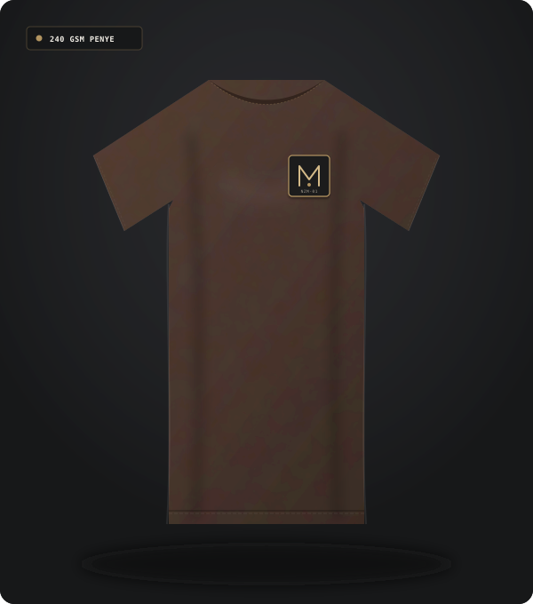
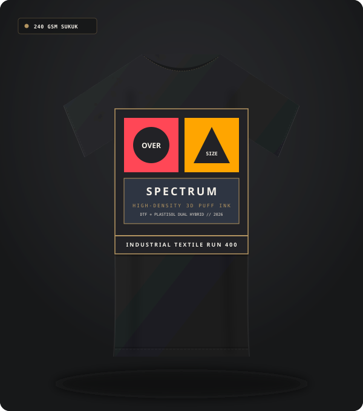
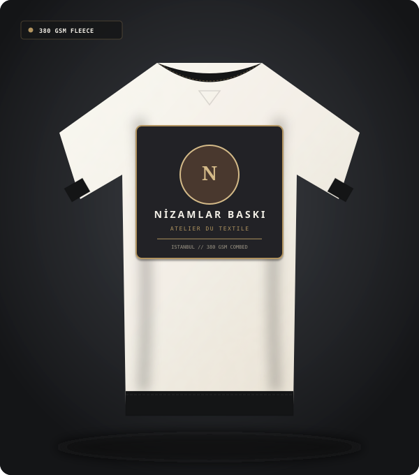
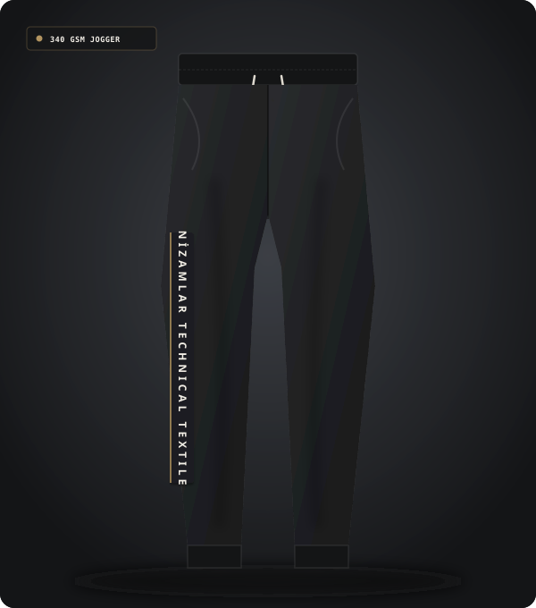
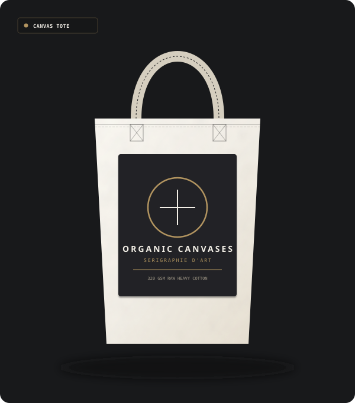
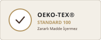
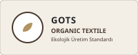
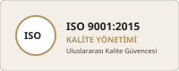
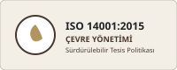

SIRT BASKI // SU BAZLI

Streetwear Büyük Sırt Baskılı Tişört
Çok Renkli Serigrafi & Tram Detayı

Nizamlar Baskı; robotik serigrafi ahtapotları, yeni nesil DTF transfer hatları ve hassas fikse üniteleriyle hazır giyim ve kurumsal projelere canlı, yıkanmaya dayanıklı ve sürdürülebilir baskılar üretir.
Tekstil baskıda farkı yaratan, ham kumaşın doğal lif yapısına zarar vermeden pigmentleri mikron hassasiyetinde tutundurabilmektir.
Yandaki interaktif sürgüyü sağa sola kaydırarak, 240 GSM %100 penye pamuklu kumaşın baskısız ham halini ve Nizamlar Baskı tesislerinde su bazlı serigrafi ile üretilmiş nihai halini birebir karşılaştırabilirsiniz.
↔ Sürgüyü fare veya parmağınızla kaydırarak baskı detaylarını inceleyin
Tişörtten sweatshirt'e, jogger'dan kanvas bez çantaya kadar her üründe belirgin, dokulu ve yüksek kaliteli baskı uygulamaları.







Her kumaş türüne, sipariş adedine ve desen detayına en uygun baskı teknolojisini belirliyor; yüksek yıkama dayanımı ve canlı renk garantisi sağlıyoruz.

Sınırsız renk geçişi, yüksek çözünürlüklü detaylar ve pamuktan polyestere her türlü kumaşa mükemmel tutunma sağlayan modern transfer baskı teknolojisi.

Yüksek adetli üretimlerde en ekonomik maliyet, doygun renk örtücülüğü ve su bazlı, plastizol ile deşarj boyalarla kusursuz yüzey bitişi.
Promosyon, kurumsal iş kıyafeti ve hazır giyim markaları için süprem, pike veya organik pamuklu tişörtlerde ön, sırt ve kol parça baskıları.
Hassas kalıp pozlamadan serigrafi rakle geçişlerine, DTF fırınlamadan kalite kontrol laboratuvarımıza kadar her adımda yüksek standart.
CMYK ve spot Pantone kodlarıyla kumaşın zemin rengine göre özel film ve desen hazırlığı.
Eşit baskı basıncı sağlayan pnömatik rakle sistemleri ile her parçada aynı kusursuz sonuç.
160°C kontrollü tünel kurutucularda kumaş liflerine nüfuz eden yıkama dayanımlı sabitleme.
Beydur referanslı kurumsal süreç mimarimizde hiçbir aşama şansa bırakılmaz. Tasarımın teslim alınmasından kumaşın paketlenmesine kadar her adım kayıt altına alınır ve kontrol edilir.
Grafik dosyalarının çözünürlük, tram ve renk ayrımı kontrolü.
Gerçek kumaş üzerinde numune baskı ve yazılı müşteri onayı.
Yüksek hızlı makine parkurunda kesintisiz ve hassas baskı üretimi.

Gelecek nesillere temiz izler bırakmak için üretim süreçlerimizde su bazlı ekolojik boyaları, enerji tasarruflu fırınları ve sertifikalı kalite süreçlerini benimsiyoruz.

Kullanılan tüm baskı kimyasalları insan sağlığına ve cilde zararlı toksik bileşenler barındırmaz.

Organik pamuk ve geri dönüştürülmüş kumaşlar için onaylı organik baskı süreçleri.

Siparişten teslimata kadar her adımda denetlenen uluslararası kalite yönetim sistemi.

Sıfır atık hedefi, filtreleme üniteleri ve sorumlu enerji tüketimi çevre politikası.
Hazır giyim ihracatçıları, yerel ve global giyim markaları ve kurumsal şirketler için kesintisiz baskı tedariki sağlıyoruz.